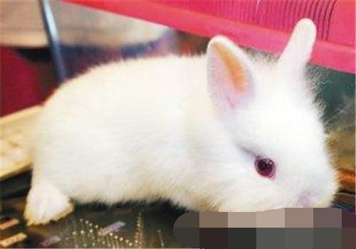

母兔假孕的原因及危害

荷兰兔(详情介绍)
母兔在交配后16－18天左右出现临产症状，如乳房肿胀、叼草拉毛，但最后并无子兔产出的现象称为母兔假孕。究竟什么原因会导致母兔发生假孕呢？母兔的假孕又有哪些危害呢？
一、假孕发生的原因
1、外因：不育公兔的性刺激或母兔患子宫炎、阴道炎等的影响。
2、内因：母兔排卵后，由于黄体的存在，孕酮分泌，促使乳腺激活，子宫增大，从而出现假孕现象。
二、假孕的危害
在生产中，母兔假孕现象的持续时间为6～8天。假孕延长了产子间隔，会降低种兔的利用率，给养兔生产造成一定损失。
母兔假孕是什么？如何防治母兔假孕？
科学定义母兔假孕，主要是指母兔在交配后16-18天出现临产行为，乳房膨胀、叼草拉毛，但并无子兔产出的现象。现实生活中的确存在母兔假孕的情况，然而母兔假孕应该怎么办，应该如何进行防治呢？
导致母兔假孕的原因有内外因之分。外阴主要是不育公兔的性刺激或母兔患子宫炎、阴道炎等的影响。而内因主要是母兔排卵后，由于黄体的存在，孕酮分泌，促使乳腺激活，子宫增大，从而出现假孕现象。
假孕对母兔的身体健康也存在一定的影响。站在生产中，母兔假孕现象的持续时间为6-8天。假孕延长了产子间隔，会降低种兔的利用率，给养兔生产造成一定损失。
要防治母兔假孕，首先还得养好种公兔，可以采取重复配种或双重配种法，减少母兔因配种刺激后排卵而未受精的现象。而且还要加强繁殖母兔的管理，防止母兔相互爬跨，不要随意捕捉和抚摸等人为刺激。当然，要防止母兔假孕配种前，应检查母兔的生殖系统有无炎症，如果发现母兔身体不健康，那么就不要盲目给母兔配种哦。此外，如果发现母兔假孕，一定要及时补配，母兔交配后10-12天进行摸胎检查。
假孕耽误繁殖仔兔和消耗体力 如何能防止母兔假孕
在养兔生产中，往往会遇到有的母兔在交配后16～18天出现临产行为，母兔的乳房发生膨胀，并开始叼草拉毛作窝，但等了几天并无仔兔产出，这种现象是假孕。假孕不但耽误繁殖仔兔，而且还会影响和消耗母兔的体力，造成经济损失。为了减少或杜绝假孕发生，可采取以下措施：
1．建立谱系档案。对作繁殖用的种兔，应建谱立系，分组编号。公兔、母兔分别建立繁殖卡片，使交配、产仔有记录，做到近亲不配，未发育成熟不配，换毛高峰期和风雨雪炎热天气不配。
2．采用二次配种技术。一般种兔场采用重复配种法，即在第1次配种5～6小时再用同1只种公兔进行第2次交配。商品兔场可采用双重配种法，即在第1只公兔交配后过15分钟再用另一只种公兔交配1次。若是采用长期没进行交配的种公兔，必须在配种6～8小时内进行复配。
3．加强饲养管理，搞好清洁卫生和消毒工作，对种兔增加运动时间，防止过度肥胖。不要随意捕捉、抚摸母兔。除促使母兔发情外，一般不让试情公兔随意追逐爬跨母兔。种母兔应分笼饲养，保持一兔一笼，防止有的母兔发情后爬跨其他母兔。
4.母兔交配后5～7天进行复配，10～12天进行摸胎检查，以便及时补配，防止不孕或假孕。（科技网）